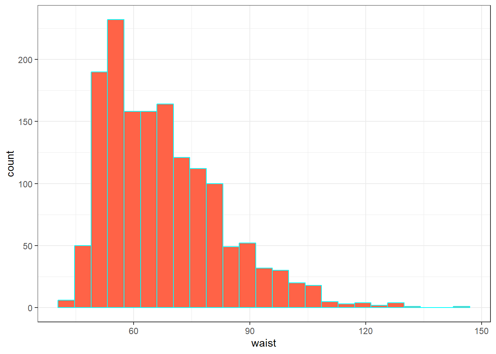
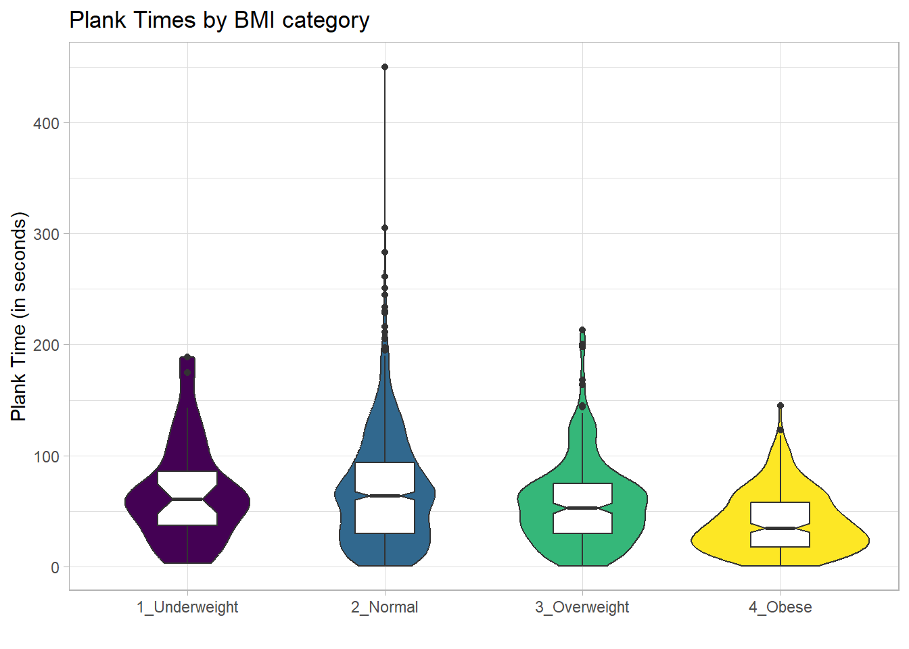

10 National Youth Fitness Survey
10.1 Setup: Packages Used Here
We also use functions from the Hmisc and mosaic packages in this chapter, but do not load the whole packages.
10.2 What is the NHANES NYFS?
The nnyfs.csv and the nnyfs.Rds data files were built by Professor Love using data from the 2012 National Youth Fitness Survey.
The NHANES National Youth Fitness Survey (NNYFS) was conducted in 2012 to collect data on physical activity and fitness levels in order to provide an evaluation of the health and fitness of children in the U.S. ages 3 to 15. The NNYFS collected data on physical activity and fitness levels of our youth through interviews and fitness tests.
In the nnyfs data file (either .csv or .Rds), I’m only providing a modest fraction of the available information. More on the NNYFS (including information I’m not using) is available at https://wwwn.cdc.gov/nchs/nhanes/search/nnyfs12.aspx.
The data elements I’m using fall into four main groups, or components:
What I did was merge a few elements from each of the available components of the NHANES National Youth Fitness Survey, reformulated (and in some cases simplified) some variables, and restricted the sample to kids who had completed elements of each of the four components.
10.3 The Variables included in nnyfs
This section tells you where the data come from, and briefly describe what is collected.
10.3.1 From the NNYFS Demographic Component
All of these come from the Y_DEMO file.
In nnyfs
|
In Y_DEMO
|
Description |
|---|---|---|
SEQN |
SEQN |
Subject ID, connects all of the files |
sex |
RIAGENDR |
Really, this is sex, not gender |
age_child |
RIDAGEYR |
Age in years at screening |
race_eth |
RIDRETH1 |
Race/Hispanic origin (collapsed to 4 levels) |
educ_child |
DMDEDUC3 |
Education Level (for children ages 6-15). 0 = Kindergarten, 9 = Ninth grade or higher |
language |
SIALANG |
Language in which the interview was conducted |
sampling_wt |
WTMEC |
Full-sample MEC exam weight (for inference) |
income_pov |
INDFMPIR |
Ratio of family income to poverty (ceiling is 5.0) |
age_adult |
DMDHRAGE |
Age of adult who brought child to interview |
educ_adult |
DMDHREDU |
Education level of adult who brought child |
10.3.2 From the NNYFS Dietary Component
From the Y_DR1TOT file, we have a number of variables related to the child’s diet, with the following summaries mostly describing consumption “yesterday” in a dietary recall questionnaire.
In nnyfs
|
In Y_DR1TOT
|
Description |
|---|---|---|
respondent |
DR1MNRSP |
who responded to interview (child, Mom, someone else) |
salt_used |
DBQ095Z |
uses salt, lite salt or salt substitute at the table |
energy |
DR1TKCAL |
energy consumed (kcal) |
protein |
DR1TPROT |
protein consumed (g) |
sugar |
DR1TSUGR |
total sugar consumed (g) |
fat |
DR1TTFAT |
total fat consumed (g) |
diet_yesterday |
DR1_300 |
compare food consumed yesterday to usual amount |
water |
DR1_320Z |
total plain water drank (g) |
10.3.3 From the NNYFS Examination Component
From the Y_BMX file of Body Measures:
In nnyfs
|
In Y_BMX
|
Description |
|---|---|---|
height |
BMXHT | standing height (cm) |
weight |
BMXWT | weight (kg) |
bmi |
BMXBMI | body mass index (\(kg/m^2\)) |
bmi_cat |
BMDBMIC | BMI category (4 levels) |
arm_length |
BMXARML | Upper arm length (cm) |
waist |
BMXWAIST | Waist circumference (cm) |
arm_circ |
BMXARMC | Arm circumference (cm) |
calf_circ |
BMXCALF | Maximal calf circumference (cm) |
calf_skinfold |
BMXCALFF | Calf skinfold (mm) |
triceps_skinfold |
BMXTRI | Triceps skinfold (mm) |
subscapular_skinfold |
BMXSUB | Subscapular skinfold (mm) |
From the Y_PLX file of Plank test results:
In nnyfs
|
In Y_PLX
|
Description |
|---|---|---|
plank_time |
MPXPLANK | # of seconds plank position is held |
10.3.4 From the NNYFS Questionnaire Component
From the Y_PAQ file of Physical Activity questions:
In nnyfs
|
In Y_PAQ
|
Description |
|---|---|---|
active_days |
PAQ706 | Days physically active (\(\geq 60\) min.) in past week |
tv_hours |
PAQ710 | Average hours watching TV/videos past 30d |
computer_hours |
PAQ715 | Average hours on computer past 30d |
physical_last_week |
PAQ722 | Any physical activity outside of school past week |
enjoy_recess |
PAQ750 | Enjoy participating in PE/recess |
From the Y_DBQ file of Diet Behavior and Nutrition questions:
In nnyfs
|
In Y_DBQ
|
Description |
|---|---|---|
meals_out |
DBD895 | # meals not home-prepared in past 7 days |
From the Y_HIQ file of Health Insurance questions:
In nnyfs
|
In Y_HIQ
|
Description |
|---|---|---|
insured |
HIQ011 | Covered by Health Insurance? |
insurance |
HIQ031 | Type of Health Insurance coverage |
From the Y_HUQ file of Access to Care questions:
In nnyfs
|
In Y_HUQ
|
Description |
|---|---|---|
phys_health |
HUQ010 | General health condition (Excellent - Poor) |
access_to_care |
HUQ030 | Routine place to get care? |
care_source |
HUQ040 | Type of place most often goes to for care |
From the Y_MCQ file of Medical Conditions questions:
In nnyfs
|
In Y_MCQ
|
Description |
|---|---|---|
asthma_ever |
MCQ010 | Ever told you have asthma? |
asthma_now |
MCQ035 | Still have asthma? |
From the Y_RXQ_RX file of Prescription Medication questions:
In nnyfs
|
In Y_RXQ_RX
|
Description |
|---|---|---|
med_use |
RXDUSE | Taken prescription medication in last month? |
med_count |
RXDCOUNT | # of prescription meds taken in past month |
10.4 Reading in the Data
Now, I’ll take a look at the nnyfs data, which I’ve made available in a comma-separated version (nnyfs.csv), if you prefer, as well as in an R data set (nnyfs.Rds) which loads a bit faster. After loading the file, let’s get a handle on its size and contents. In my R Project for these notes, the data are contained in a separate data subdirectory.
There are 1518 rows (subjects) and 45 columns (variables), by which I mean that there are 1518 kids in the nnyfs data frame, and we have 45 pieces of information on each subject. So, what do we have, exactly?
nnyfs # A tibble: 1,518 × 45
SEQN sex age_child race_eth educ_child language sampling_wt income_pov
<dbl> <fct> <dbl> <fct> <dbl> <fct> <dbl> <dbl>
1 71917 Female 15 3_Black No… 9 English 28299. 0.21
2 71918 Female 8 3_Black No… 2 English 15127. 5
3 71919 Female 14 2_White No… 8 English 29977. 5
4 71920 Female 15 2_White No… 8 English 80652. 0.87
5 71921 Male 3 2_White No… NA English 55592. 4.34
6 71922 Male 12 1_Hispanic 6 English 27365. 5
7 71923 Male 12 2_White No… 5 English 86673. 5
8 71924 Female 8 4_Other Ra… 2 English 39549. 2.74
9 71925 Male 7 1_Hispanic 0 English 42333. 0.46
10 71926 Male 8 3_Black No… 2 English 15307. 1.57
# ℹ 1,508 more rows
# ℹ 37 more variables: age_adult <dbl>, educ_adult <fct>, respondent <fct>,
# salt_used <fct>, energy <dbl>, protein <dbl>, sugar <dbl>, fat <dbl>,
# diet_yesterday <fct>, water <dbl>, plank_time <dbl>, height <dbl>,
# weight <dbl>, bmi <dbl>, bmi_cat <fct>, arm_length <dbl>, waist <dbl>,
# arm_circ <dbl>, calf_circ <dbl>, calf_skinfold <dbl>,
# triceps_skinfold <dbl>, subscapular_skinfold <dbl>, active_days <dbl>, …We can learn something about the structure of the tibble from such functions as str or glimpse.
str(nnyfs)tibble [1,518 × 45] (S3: tbl_df/tbl/data.frame)
$ SEQN : num [1:1518] 71917 71918 71919 71920 71921 ...
$ sex : Factor w/ 2 levels "Female","Male": 1 1 1 1 2 2 2 1 2 2 ...
$ age_child : num [1:1518] 15 8 14 15 3 12 12 8 7 8 ...
$ race_eth : Factor w/ 4 levels "1_Hispanic","2_White Non-Hispanic",..: 3 3 2 2 2 1 2 4 1 3 ...
$ educ_child : num [1:1518] 9 2 8 8 NA 6 5 2 0 2 ...
$ language : Factor w/ 2 levels "English","Spanish": 1 1 1 1 1 1 1 1 1 1 ...
$ sampling_wt : num [1:1518] 28299 15127 29977 80652 55592 ...
$ income_pov : num [1:1518] 0.21 5 5 0.87 4.34 5 5 2.74 0.46 1.57 ...
$ age_adult : num [1:1518] 46 46 42 53 31 42 39 31 45 56 ...
$ educ_adult : Factor w/ 5 levels "1_Less than 9th Grade",..: 2 3 5 3 3 4 2 3 2 3 ...
$ respondent : Factor w/ 3 levels "Child","Mom",..: 1 2 1 1 2 1 1 1 2 1 ...
$ salt_used : Factor w/ 2 levels "No","Yes": 2 2 2 2 1 2 2 2 1 2 ...
$ energy : num [1:1518] 2844 1725 2304 1114 1655 ...
$ protein : num [1:1518] 169.1 55.2 199.3 14 50.6 ...
$ sugar : num [1:1518] 128.2 118.7 81.4 119.2 90.3 ...
$ fat : num [1:1518] 127.9 63.7 86.1 36 53.3 ...
$ diet_yesterday : Factor w/ 3 levels "1_Much more than usual",..: 2 2 2 2 2 2 1 2 2 3 ...
$ water : num [1:1518] 607 178 503 859 148 ...
$ plank_time : num [1:1518] NA 45 121 45 11 107 127 44 184 58 ...
$ height : num [1:1518] NA 131.6 172 167.1 90.2 ...
$ weight : num [1:1518] NA 38.6 58.7 92.5 12.4 66.4 56.7 22.2 20.9 28.3 ...
$ bmi : num [1:1518] NA 22.3 19.8 33.1 15.2 25.9 22.5 14.4 15.9 17 ...
$ bmi_cat : Factor w/ 4 levels "1_Underweight",..: NA 4 2 4 2 4 3 2 2 2 ...
$ arm_length : num [1:1518] NA 27.7 38.4 35.9 18.3 34.2 33 26.5 24.2 26 ...
$ waist : num [1:1518] NA 71.9 79.4 96.4 46.8 90 72.3 56.1 54.5 59.7 ...
$ arm_circ : num [1:1518] NA 25.4 26 37.9 15.1 29.5 27.9 17.6 17.7 19.9 ...
$ calf_circ : num [1:1518] NA 32.3 35.3 46.8 19.4 36.9 36.8 24 24.3 27.3 ...
$ calf_skinfold : num [1:1518] NA 22 18.4 NA 8.4 22 18.3 7 7.2 8.2 ...
$ triceps_skinfold : num [1:1518] NA 19.9 15 20.6 8.6 22.8 20.5 12.9 6.9 8.8 ...
$ subscapular_skinfold: num [1:1518] NA 17.4 9.8 22.8 5.7 24.4 12.6 6.8 4.8 6.1 ...
$ active_days : num [1:1518] 3 5 3 3 7 2 5 3 7 7 ...
$ tv_hours : num [1:1518] 2 2 1 3 2 3 0 4 2 2 ...
$ computer_hours : num [1:1518] 1 2 3 3 0 1 0 3 1 1 ...
$ physical_last_week : Factor w/ 2 levels "No","Yes": 1 1 2 2 2 2 2 2 2 2 ...
$ enjoy_recess : Factor w/ 5 levels "1_Strongly Agree",..: 1 1 3 2 NA 2 2 NA 1 1 ...
$ meals_out : num [1:1518] 0 2 3 2 1 1 2 1 0 2 ...
$ insured : Factor w/ 2 levels "Has Insurance",..: 1 1 1 1 1 1 1 1 1 1 ...
$ phys_health : Factor w/ 5 levels "1_Excellent",..: 1 3 1 3 1 1 3 1 2 1 ...
$ access_to_care : Factor w/ 2 levels "Has Usual Care Source",..: 1 1 1 1 1 1 1 1 1 1 ...
$ care_source : Factor w/ 6 levels "Clinic or Health Center",..: 1 2 2 2 2 2 2 2 2 2 ...
$ asthma_ever : Factor w/ 2 levels "History of Asthma",..: 2 1 2 1 2 2 2 2 2 2 ...
$ asthma_now : Factor w/ 2 levels "Asthma Now","No Asthma Now": 2 1 2 1 2 2 2 2 2 2 ...
$ med_use : Factor w/ 2 levels "Had Medication",..: 2 1 2 1 2 2 2 2 2 2 ...
$ med_count : num [1:1518] 0 1 0 2 0 0 0 0 0 0 ...
$ insurance : Factor w/ 10 levels "Medicaid","Medicare",..: 8 8 5 8 5 5 5 5 8 1 ...There are a lot of variables here. Let’s run through the first few in a little detail.
10.4.1 SEQN
The first variable, SEQN is just a (numerical) identifying code attributable to a given subject of the survey. This is nominal data, which will be of little interest down the line. On some occasions, as in this case, the ID numbers are sequential, in the sense that subject 71919 was included in the data base after subject 71918, but this fact isn’t particularly interesting here, because the protocol remained unchanged throughout the study.
10.4.2 sex
The second variable, sex, is listed as a factor variable (R uses factor and character to refer to categorical, especially non-numeric information). Here, as we can see below, we have two levels, Female and Male.
nnyfs |>
tabyl(sex) |>
adorn_totals() |>
adorn_pct_formatting() sex n percent
Female 760 50.1%
Male 758 49.9%
Total 1518 100.0%
10.4.3 age_child
The third variable, age_child, is the age of the child at the time of their screening to be in the study, measured in years. Note that age is a continuous concept, but the measure used here (number of full years alive) is a common discrete approach to measurement. Age, of course, has a meaningful zero point, so this can be thought of as a ratio variable; a child who is 6 is half as old as one who is 12. We can tabulate the observed values, since there are only a dozen or so.
nnyfs |>
tabyl(age_child) |>
adorn_pct_formatting() age_child n percent
3 110 7.2%
4 112 7.4%
5 114 7.5%
6 129 8.5%
7 123 8.1%
8 112 7.4%
9 99 6.5%
10 124 8.2%
11 111 7.3%
12 137 9.0%
13 119 7.8%
14 130 8.6%
15 98 6.5%At the time of initial screening, these children should have been between 3 and 15 years of age, so things look reasonable. Since this is a meaningful quantitative variable, we may be interested in a more descriptive summary.
age_child
Min. : 3.000
1st Qu.: 6.000
Median : 9.000
Mean : 9.033
3rd Qu.:12.000
Max. :15.000 These six numbers provide a nice, if incomplete, look at the ages.
-
Min.= the minimum, or youngest age at the examination was 3 years old. -
1st Qu.= the first quartile (25th percentile) of the ages was 6. This means that 25 percent of the subjects were age 6 or less. -
Median= the second quartile (50th percentile) of the ages was 9. This is often used to describe the center of the data. Half of the subjects were age 9 or less. -
3rd Qu.= the third quartile (75th percentile) of the ages was 12 -
Max.= the maximum, or oldest age at the examination was 15 years.
We could get the standard deviation and a count of missing and non-missing observations with favstats from the mosaic package, among many other options (see Chapter 3 and @#sec-summ_quant for examples.)
10.4.4 race_eth
The fourth variable in the data set is race_eth, which is a multi-categorical variable describing the child’s race and ethnicity.
nnyfs |> tabyl(race_eth) |>
adorn_pct_formatting() |>
kbl()| race_eth | n | percent |
|---|---|---|
| 1_Hispanic | 450 | 29.6% |
| 2_White Non-Hispanic | 610 | 40.2% |
| 3_Black Non-Hispanic | 338 | 22.3% |
| 4_Other Race/Ethnicity | 120 | 7.9% |
And now, we get the idea of looking at whether our numerical summaries of the children’s ages varies by their race/ethnicity…
mosaic::favstats(age_child ~ race_eth, data = nnyfs) race_eth min Q1 median Q3 max mean sd n missing
1 1_Hispanic 3 5.25 9.0 12 15 8.793333 3.733846 450 0
2 2_White Non-Hispanic 3 6.00 9.0 12 15 9.137705 3.804421 610 0
3 3_Black Non-Hispanic 3 6.00 9.0 12 15 9.038462 3.576423 338 0
4 4_Other Race/Ethnicity 3 7.00 9.5 12 15 9.383333 3.427970 120 0
10.4.5 income_pov
Skipping down a bit, let’s look at the family income as a multiple of the poverty level. Here’s the summary.
income_pov
Min. :0.000
1st Qu.:0.870
Median :1.740
Mean :2.242
3rd Qu.:3.520
Max. :5.000
NA's :89 We see there is some missing data here. Let’s ignore that for the moment and concentrate on interpreting the results for the children with actual data. We should start with a picture.
ggplot(nnyfs, aes(x = income_pov)) +
geom_histogram(bins = 30, fill = "white", col = "blue")Warning: Removed 89 rows containing non-finite outside the scale range
(`stat_bin()`).The histogram shows us that the values are truncated at 5, so that children whose actual family income is above 5 times the poverty line are listed as 5. We also see a message reminding us that some of the data are missing for this variable.
Is there a relationship between income_pov and race_eth in these data?
mosaic::favstats(income_pov ~ race_eth, data = nnyfs) |>
kbl(digits = 1) |>
kable_styling(full_width = FALSE)| race_eth | min | Q1 | median | Q3 | max | mean | sd | n | missing |
|---|---|---|---|---|---|---|---|---|---|
| 1_Hispanic | 0 | 0.6 | 1.0 | 1.7 | 5 | 1.3 | 1.1 | 409 | 41 |
| 2_White Non-Hispanic | 0 | 1.5 | 3.0 | 4.5 | 5 | 2.9 | 1.6 | 588 | 22 |
| 3_Black Non-Hispanic | 0 | 0.8 | 1.6 | 2.8 | 5 | 2.0 | 1.5 | 328 | 10 |
| 4_Other Race/Ethnicity | 0 | 1.2 | 2.7 | 4.6 | 5 | 2.8 | 1.7 | 104 | 16 |
This deserves a picture. Let’s try a boxplot.
ggplot(nnyfs, aes(x = race_eth, y = income_pov)) +
geom_boxplot()Warning: Removed 89 rows containing non-finite outside the scale range
(`stat_boxplot()`).We’re reminded here that several of our subjects are not included in this plot, since they have some missing information.
10.4.6 bmi
Moving into the body measurement data, bmi is the body-mass index of the child. The BMI is a person’s weight in kilograms divided by his or her height in meters squared. Symbolically, BMI = weight in kg / (height in m)2. This is a continuous concept, measured to as many decimal places as you like, and it has a meaningful zero point, so it’s a ratio variable.
bmi
Min. :11.90
1st Qu.:15.90
Median :18.10
Mean :19.63
3rd Qu.:21.90
Max. :48.30
NA's :4 Why would a table of these BMI values not be a great idea, for these data? A hint is that R represents this variable as num or numeric in its depiction of the data structure, and this implies that R has some decimal values stored. Here, I’ll use the head() function and the tail() function to show the first few and the last few values of what would prove to be a very long table of bmi values.
nnyfs |>
tabyl(bmi) |>
adorn_pct_formatting() |>
head() bmi n percent valid_percent
11.9 1 0.1% 0.1%
12.6 1 0.1% 0.1%
12.7 1 0.1% 0.1%
12.9 1 0.1% 0.1%
13.0 2 0.1% 0.1%
13.1 1 0.1% 0.1%nnyfs |>
tabyl(bmi) |>
adorn_pct_formatting() |>
tail() bmi n percent valid_percent
42.8 1 0.1% 0.1%
43.0 1 0.1% 0.1%
46.9 1 0.1% 0.1%
48.2 1 0.1% 0.1%
48.3 1 0.1% 0.1%
NA 4 0.3% -
10.4.7 bmi_cat
Next I’ll look at the bmi_cat information. This is a four-category ordinal variable, which divides the sample according to BMI into four groups. The BMI categories use sex-specific 2000 BMI-for-age (in months) growth charts prepared by the Centers for Disease Control for the US. We can get the breakdown from a table of the variable’s values.
nnyfs |>
tabyl(bmi_cat) |>
adorn_pct_formatting() bmi_cat n percent valid_percent
1_Underweight 41 2.7% 2.7%
2_Normal 920 60.6% 60.8%
3_Overweight 258 17.0% 17.0%
4_Obese 295 19.4% 19.5%
<NA> 4 0.3% -In terms of percentiles by age and sex from the growth charts, the meanings of the categories are:
- Underweight (BMI < 5th percentile)
- Normal weight (BMI 5th to < 85th percentile)
- Overweight (BMI 85th to < 95th percentile)
- Obese (BMI \(\geq\) 95th percentile)
Note how I’ve used labels in the bmi_cat variable that include a number at the start so that the table results are sorted in a rational way. R sorts tables alphabetically, in general. We’ll use the forcats package to work with categorical variables that we store as factors eventually, but for now, we’ll keep things relatively simple.
Note that the bmi_cat data don’t completely separate out the raw bmi data, because the calculation of percentiles requires different tables for each combination of age and sex.
mosaic::favstats(bmi ~ bmi_cat, data = nnyfs) |>
kbl(digits = 1) |>
kable_styling(full_width = FALSE)| bmi_cat | min | Q1 | median | Q3 | max | mean | sd | n | missing |
|---|---|---|---|---|---|---|---|---|---|
| 1_Underweight | 11.9 | 13.4 | 13.7 | 15.0 | 16.5 | 14.1 | 1.1 | 41 | 0 |
| 2_Normal | 13.5 | 15.4 | 16.5 | 18.7 | 24.0 | 17.2 | 2.3 | 920 | 0 |
| 3_Overweight | 16.9 | 18.3 | 21.4 | 23.4 | 27.9 | 21.2 | 2.9 | 258 | 0 |
| 4_Obese | 17.9 | 22.3 | 26.2 | 30.2 | 48.3 | 26.7 | 5.7 | 295 | 0 |
10.4.8 waist
Let’s also look briefly at waist, which is the circumference of the child’s waist, in centimeters. Again, this is a numeric variable, so perhaps we’ll stick to the simple summary, rather than obtaining a table of observed values.
mosaic::favstats(~ waist, data = nnyfs) min Q1 median Q3 max mean sd n missing
42.5 55.6 64.8 76.6 144.7 67.70536 15.19809 1512 6Here’s a histogram of the waist circumference data.
ggplot(nnyfs, aes(x = waist)) +
geom_histogram(bins = 25, fill = "tomato", color = "cyan")Warning: Removed 6 rows containing non-finite outside the scale range
(`stat_bin()`).
10.4.9 triceps_skinfold
The last variable I’ll look at for now is triceps_skinfold, which is measured in millimeters. This is one of several common locations used for the assessment of body fat using skinfold calipers, and is a frequent part of growth assessments in children. Again, this is a numeric variable according to R.
mosaic::favstats(~ triceps_skinfold, data = nnyfs) min Q1 median Q3 max mean sd n missing
4 9.1 12.4 18 38.8 14.35725 6.758825 1497 21And here’s a histogram of the triceps skinfold data, with the fill and color flipped from what we saw in the plot of the waist circumference data a moment ago.
ggplot(nnyfs, aes(x = triceps_skinfold)) +
geom_histogram(bins = 25, fill = "cyan", color = "tomato")Warning: Removed 21 rows containing non-finite outside the scale range
(`stat_bin()`).OK. We’ve seen a few variables, and we’ll move on now to look more seriously at the data.
10.5 Additional Numeric Summaries
10.5.1 The Five Number Summary, Quantiles and IQR
The five number summary is most famous when used to form a box plot - it’s the minimum, 25th percentile, median, 75th percentile and maximum. For numerical and integer variables, the summary function produces the five number summary, plus the mean, and a count of any missing values (NA’s).
waist energy sugar
Min. : 42.50 Min. : 257 Min. : 1.00
1st Qu.: 55.60 1st Qu.:1368 1st Qu.: 82.66
Median : 64.80 Median :1794 Median :116.92
Mean : 67.71 Mean :1877 Mean :124.32
3rd Qu.: 76.60 3rd Qu.:2306 3rd Qu.:157.05
Max. :144.70 Max. :5265 Max. :405.49
NA's :6 As an alternative, we can use the $ notation to indicate the variable we wish to study inside a data set, and we can use the fivenum function to get the five numbers used in developing a box plot. We’ll focus for a little while on the number of kilocalories consumed by each child, according to the dietary recall questionnaire. That’s the energy variable.
fivenum(nnyfs$energy)[1] 257.0 1367.0 1794.5 2306.0 5265.0- As mentioned in @ref(rangeandiqr), the inter-quartile range, or IQR, is sometimes used as a competitor for the standard deviation. It’s the difference between the 75th percentile and the 25th percentile. The 25th percentile, median, and 75th percentile are referred to as the quartiles of the data set, because, together, they split the data into quarters.
IQR(nnyfs$energy)[1] 938.5We can obtain quantiles (percentiles) as we like - here, I’m asking for the 1st and 99th:
10.6 Additional Summaries from favstats
If we’re focusing on a single variable, the favstats function in the mosaic package can be very helpful. Rather than calling up the entire mosaic library here, I’ll just specify the function within the library.
mosaic::favstats(~ energy, data = nnyfs) min Q1 median Q3 max mean sd n missing
257 1367.5 1794.5 2306 5265 1877.157 722.3537 1518 0This adds three useful results to the base summary - the standard deviation, the sample size and the number of missing observations.
10.7 The Histogram
Obtaining a basic histogram of, for example, the energy (kilocalories consumed) in the nnyfs data is pretty straightforward.
ggplot(data = nnyfs, aes(x = energy)) +
geom_histogram(binwidth = 100, col = "white")
10.7.1 Freedman-Diaconis Rule to select bin width
If we like, we can suggest a particular number of cells for the histogram, instead of accepting the defaults. In this case, we have \(n\) = 1518 observations. The Freedman-Diaconis rule can be helpful here. That rule suggests that we set the bin-width to
\[ h = \frac{2*IQR}{n^{1/3}} \]
so that the number of bins is equal to the range of the data set (maximum - minimum) divided by \(h\).
For the energy data in the nnyfs tibble, we have
- IQR of 938.5, \(n\) = 1518 and range = 5008
- Thus, by the Freedman-Diaconis rule, the optimal binwidth \(h\) is 163.3203676, or, realistically, 163.
- And so the number of bins would be 30.6636586, or, realistically 31.
Here, we’ll draw the graph again, using the Freedman-Diaconis rule to identify the number of bins, and also play around a bit with the fill and color of the bars.
bw <- 2 * IQR(nnyfs$energy) / length(nnyfs$energy)^(1/3)
ggplot(data = nnyfs, aes(x = energy)) +
geom_histogram(binwidth=bw, color = "white", fill = "black")This is a nice start, but it is by no means a finished graph.
Let’s improve the axis labels, add a title, and fill in the bars with a distinctive blue and use a black outline around each bar. I’ll just use 25 bars, because I like how that looks in this case, and optimizing the number of bins is rarely important.
ggplot(data = nnyfs, aes(x = energy)) +
geom_histogram(bins=25, color = "black", fill = "dodgerblue") +
labs(title = "Histogram of Body-Mass Index Results in the nnyfs data",
x = "Energy Consumed (kcal)", y = "# of Subjects")10.7.2 A Note on Colors
The simplest way to specify a color is with its name, enclosed in parentheses. My favorite list of R colors is http://www.stat.columbia.edu/~tzheng/files/Rcolor.pdf. In a pinch, you can usually find it by googling Colors in R. You can also type colors() in the R console to obtain a list of the names of the same 657 colors.
When using colors to make comparisons, you may be interested in using a scale that has some nice properties. The viridis package vignette describes four color scales (viridis, magma, plasma and inferno) that are designed to be colorful, robust to colorblindness and gray scale printing, and perceptually uniform, which means (as the package authors describe it) that values close to each other have similar-appearing colors and values far away from each other have more different-appearing colors, consistently across the range of values. We can apply these colors with special functions within ggplot.
Here’s a comparison of several histograms, looking at energy consumed as a function of whether yesterday was typical in terms of food consumption.
ggplot(data = nnyfs, aes(x = energy, fill = diet_yesterday)) +
geom_histogram(bins = 20, col = "white") +
scale_fill_viridis_d() +
facet_wrap(~ diet_yesterday)We don’t really need the legend here, and perhaps we should restrict the plot to participants who responded to the diet_yesterday question, and put in a title and better axis labels?
nnyfs_temp <- nnyfs |>
filter(!is.na(energy), !is.na(diet_yesterday))
ggplot(data = nnyfs_temp, aes(x = energy, fill = diet_yesterday)) +
geom_histogram(bins = 20, col = "white") +
scale_fill_viridis_d() +
guides(fill = "none") +
facet_wrap(~ diet_yesterday) +
labs(x = "Energy consumed, in kcal",
title = "Energy Consumption and How Typical Was Yesterday's Eating",
subtitle = "NHANES National Youth Fitness Survey, no survey weighting")10.8 The Frequency Polygon with Rug Plot
As we’ve seen, we can also plot the distribution of a single continuous variable using the freqpoly geom. We can also add a rug plot, which places a small vertical line on the horizontal axis everywhere where an observation appears in the data.
ggplot(data = nnyfs, aes(x = energy)) +
geom_freqpoly(binwidth = 150, color = "dodgerblue") +
geom_rug(color = "red") +
labs(title = "Frequency Polygon of nnyfs Energy data",
x = "Energy (kcal)", y = "# of Patients")
10.9 Plotting the Probability Density Function
We can also produce a density function, which has the effect of smoothing out the bumps in a histogram or frequency polygon, while also changing what is plotted on the y-axis.
ggplot(data = nnyfs, aes(x = energy)) +
geom_density(kernel = "gaussian", color = "dodgerblue") +
labs(title = "Density of nnyfs Energy data",
x = "Energy (kcal)", y = "Probability Density function")So, what’s a density function?
- A probability density function is a function of a continuous variable, x, that represents the probability of x falling within a given range. Specifically, the integral over the interval (a,b) of the density function gives the probability that the value of x is within (a,b).
- If you’re interested in exploring more on the notion of density functions for continuous (and discrete) random variables, some nice elementary material is available at Khan Academy.
10.10 The Boxplot
Sometimes, it’s helpful to picture the five-number summary of the data in such a way as to get a general sense of the distribution. One approach is a boxplot, sometimes called a box-and-whisker plot.
10.10.1 Drawing a Boxplot for One Variable in ggplot2
The ggplot2 library easily handles comparison boxplots for multiple distributions, as we’ll see in a moment. However, building a boxplot for a single distribution requires a little trickiness.
ggplot(nnyfs, aes(x = 1, y = energy)) +
geom_boxplot(fill = "deepskyblue") +
coord_flip() +
labs(title = "Boxplot of Energy for kids in the NNYFS",
y = "Energy (kcal)",
x = "") +
theme(axis.text.y = element_blank(),
axis.ticks.y = element_blank())10.10.2 About the Boxplot
The boxplot is another John Tukey invention.
- R draws the box (here in yellow) so that its edges of the box fall at the 25th and 75th percentiles of the data, and the thick line inside the box falls at the median (50th percentile).
- The whiskers then extend out to the largest and smallest values that are not classified by the plot as candidate outliers.
- An outlier is an unusual point, far from the center of a distribution.
- Note that I’ve used the
horizontaloption to show this boxplot in this direction. Most comparison boxplots, as we’ll see below, are oriented vertically.
The boxplot’s whiskers that are drawn from the first and third quartiles (i.e. the 25th and 75th percentiles) out to the most extreme points in the data that do not meet the standard of ``candidate outliers.’’ An outlier is simply a point that is far away from the center of the data - which may be due to any number of reasons, and generally indicates a need for further investigation.
Most software, including R, uses a standard proposed by Tukey which describes a ``candidate outlier’’ as any point above the upper fence or below the lower fence. The definitions of the fences are based on the inter-quartile range (IQR).
If IQR = 75th percentile - 25th percentile, then the upper fence is 75th percentile + 1.5 IQR, and the lower fence is 25th percentile - 1.5 IQR.
So for these energy data,
- the upper fence is located at 2306 + 1.5(938.5) = 3713.75
- the lower fence is located at 1367 - 1.5(938.5) = -40.75
In this case, we see no points identified as outliers in the low part of the distribution, but quite a few identified that way on the high side. This tends to identify about 5% of the data as a candidate outlier, if the data follow a Normal distribution.
- This plot is indicating clearly that there is some asymmetry (skew) in the data, specifically right skew.
- The standard R uses is to indicate as outliers any points that are more than 1.5 inter-quartile ranges away from the edges of the box.
The horizontal orientation I’ve chosen here clarifies the relationship of direction of skew to the plot. A plot like this, with multiple outliers on the right side is indicative of a long right tail in the distribution, and hence, positive or right skew - with the mean being larger than the median. Other indications of skew include having one side of the box being substantially wider than the other, or one side of the whiskers being substantially longer than the other. More on skew later.
10.11 A Simple Comparison Boxplot
Boxplots are most often used for comparison, as we’ve seen (for example) in Chapter 3 and @#sec-summ_quant. We can build boxplots using ggplot2, as well, and we’ll discuss that in detail later. For now, here’s a boxplot built to compare the energy results by the subject’s race/ethnicity.
ggplot(nnyfs, aes(x = factor(race_eth), y = energy, fill=factor(race_eth))) +
geom_boxplot() +
guides(fill = "none") +
labs(y = "Energy consumed (kcal)", x = "Race/Ethnicity")Let’s look at the comparison of observed energy levels across the five categories in our phys_health variable, now making use of the viridis color scheme.
ggplot(nnyfs, aes(x = factor(phys_health), y = energy, fill = factor(phys_health))) +
geom_boxplot() +
scale_fill_viridis_d() +
labs(title = "Energy by Self-Reported Physical Health, in nnyfs data")As a graph, that’s not bad, but what if we want to improve it further?
Let’s turn the boxes in the horizontal direction, and get rid of the perhaps unnecessary phys_health labels.
ggplot(nnyfs, aes(x = factor(phys_health), y = energy, fill = factor(phys_health))) +
geom_boxplot() +
scale_fill_viridis_d() +
coord_flip() +
guides(fill = "none") +
labs(title = "Energy Consumed by Self-Reported Physical Health",
subtitle = "NHANES National Youth Fitness Survey, unweighted",
x = "")
10.12 Using describe in the psych library
For additional numerical summaries, one option would be to consider using the describe function from the psych library.
psych::describe(nnyfs$energy) vars n mean sd median trimmed mad min max range skew kurtosis
X1 1 1518 1877.16 722.35 1794.5 1827.1 678.29 257 5265 5008 0.8 1.13
se
X1 18.54This package provides, in order, the following…
-
n= the sample size -
mean= the sample mean -
sd= the sample standard deviation -
median= the median, or 50th percentile -
trimmed= mean of the middle 80% of the data -
mad= median absolute deviation -
min= minimum value in the sample -
max= maximum value in the sample -
range= max - min -
skew= skewness measure, described below (indicates degree of asymmetry) -
kurtosis= kurtosis measure, described below (indicates heaviness of tails, degree of outlier-proneness) -
se= standard error of the sample mean = sd / square root of sample size, useful in inference
10.12.1 The Trimmed Mean
The trimmed mean trim value in R indicates proportion of observations to be trimmed from each end of the outcome distribution before the mean is calculated. The trimmed value provided by the psych::describe package describes what this particular package calls a 20% trimmed mean (bottom and top 10% of energy values are removed before taking the mean - it’s the mean of the middle 80% of the data.) I might call that a 80% trimmed mean sometimes, but that’s just me.
mean(nnyfs$energy, trim=.1) [1] 1827.110.12.2 The Median Absolute Deviation
An alternative to the IQR that is fancier, and a bit more robust, is the median absolute deviation, which, in large sample sizes, for data that follow a Normal distribution, will be (in expectation) equal to the standard deviation. The MAD is the median of the absolute deviations from the median, multiplied by a constant (1.4826) to yield asymptotically normal consistency.
mad(nnyfs$energy)[1] 678.289510.13 Assessing Skew
A relatively common idea is to assess skewness, several measures of which are available. Many models assume a Normal distribution, where, among other things, the data are symmetric around the mean.
Skewness measures asymmetry in the distribution, where left skew (mean < median) is indicated by negative skewness values, while right skew (mean > median) is indicated by positive values. The skew value will be near zero for data that follow a symmetric distribution.
10.13.1 Non-parametric Skewness
A simpler measure of skew, sometimes called the nonparametric skew and closely related to Pearson’s notion of median skewness, falls between -1 and +1 for any distribution. It is just the difference between the mean and the median, divided by the standard deviation.
- Values greater than +0.2 are sometimes taken to indicate fairly substantial right skew, while values below -0.2 indicate fairly substantial left skew.
The Wikipedia page on skewness, from which some of this material is derived, provides definitions for several other skewness measures.
10.14 Assessing Kurtosis (Heavy-Tailedness)
Another measure of a distribution’s shape that can be found in the psych library is the kurtosis. Kurtosis is an indicator of whether the distribution is heavy-tailed or light-tailed as compared to a Normal distribution. Positive kurtosis means more of the variance is due to outliers - unusual points far away from the mean relative to what we might expect from a Normally distributed data set with the same standard deviation.
- A Normal distribution will have a kurtosis value near 0, a distribution with similar tail behavior to what we would expect from a Normal is said to be mesokurtic
- Higher kurtosis values (meaningfully higher than 0) indicate that, as compared to a Normal distribution, the observed variance is more the result of extreme outliers (i.e. heavy tails) as opposed to being the result of more modest sized deviations from the mean. These heavy-tailed, or outlier prone, distributions are sometimes called leptokurtic.
- Kurtosis values meaningfully lower than 0 indicate light-tailed data, with fewer outliers than we’d expect in a Normal distribution. Such distributions are sometimes referred to as platykurtic, and include distributions without outliers, like the Uniform distribution.
Here’s a table:
| Fewer outliers than a Normal | Approximately Normal | More outliers than a Normal |
|---|---|---|
| Light-tailed | “Normalish” | Heavy-tailed |
| platykurtic (kurtosis < 0) | mesokurtic (kurtosis = 0) | leptokurtic (kurtosis > 0) |
psych::kurtosi(nnyfs$energy)[1] 1.130539Note that the kurtosi() function is strangely named, and is part of the psych package.
10.14.1 The Standard Error of the Sample Mean
The standard error of the sample mean, which is the standard deviation divided by the square root of the sample size:
10.15 The describe function in the Hmisc package
The Hmisc package has lots of useful functions. It’s named for its main developer, Frank Harrell. The describe function in Hmisc knows enough to separate numerical from categorical variables, and give you separate (and detailed) summaries for each.
- For a categorical variable, it provides counts of total observations (n), the number of missing values, and the number of unique categories, along with counts and percentages falling in each category.
- For a numerical variable, it provides:
- counts of total observations (n), the number of missing values, and the number of unique values
- an Info value for the data, which indicates how continuous the variable is (a score of 1 is generally indicative of a completely continuous variable with no ties, while scores near 0 indicate lots of ties, and very few unique values)
- the sample Mean
- Gini’s mean difference, which is a robust measure of spread, with larger values indicating greater dispersion in the data. It is defined as the mean absolute difference between any pairs of observations.
- many sample percentiles (quantiles) of the data, specifically (5, 10, 25, 50, 75, 90, 95, 99)
- either a complete table of all observed values, with counts and percentages (if there are a modest number of unique values), or
- a table of the five smallest and five largest values in the data set, which is useful for range checking
select(nnyfs, waist, energy, bmi)
3 Variables 1518 Observations
--------------------------------------------------------------------------------
waist
n missing distinct Info Mean Gmd .05 .10
1512 6 510 1 67.71 16.6 49.40 51.40
.25 .50 .75 .90 .95
55.60 64.80 76.60 88.70 96.84
lowest : 42.5 43.4 44.1 44.4 44.5 , highest: 125.8 126 127 132.3 144.7
--------------------------------------------------------------------------------
energy
n missing distinct Info Mean Gmd .05 .10
1518 0 1137 1 1877 796.1 849 1047
.25 .50 .75 .90 .95
1368 1794 2306 2795 3195
lowest : 257 260 326 349 392, highest: 4382 4529 5085 5215 5265
--------------------------------------------------------------------------------
bmi
n missing distinct Info Mean Gmd .05 .10
1514 4 225 1 19.63 5.269 14.30 14.90
.25 .50 .75 .90 .95
15.90 18.10 21.90 26.27 30.20
lowest : 11.9 12.6 12.7 12.9 13 , highest: 42.8 43 46.9 48.2 48.3
--------------------------------------------------------------------------------More on the Info value in Hmisc::describe is available here
10.16 Summarizing data within subgroups
Suppose we want to understand how the subjects whose diet involved consuming much more than usual yesterday compare to those who consumer their usual amount, or to those who consumed much less than usual, in terms of the energy they consumed, as well as the protein. We might start by looking at the medians and means.
nnyfs |>
group_by(diet_yesterday) |>
select(diet_yesterday, energy, protein) |>
summarise_all(list(median = median, mean = mean))# A tibble: 4 × 5
diet_yesterday energy_median protein_median energy_mean protein_mean
<fct> <dbl> <dbl> <dbl> <dbl>
1 1_Much more than usual 2098 69.4 2150. 75.1
2 2_Usual 1794 61.3 1858. 67.0
3 3_Much less than usual 1643 53.9 1779. 60.1
4 <NA> 4348 155. 4348 155. Perhaps we should restrict ourselves to the people who were not missing the diet_yesterday category, and look now at their sugar and water consumption.
nnyfs |>
filter(complete.cases(diet_yesterday)) |>
group_by(diet_yesterday) |>
select(diet_yesterday, energy, protein, sugar, water) |>
summarise_all(list(median))# A tibble: 3 × 5
diet_yesterday energy protein sugar water
<fct> <dbl> <dbl> <dbl> <dbl>
1 1_Much more than usual 2098 69.4 137. 500
2 2_Usual 1794 61.3 114. 385.
3 3_Much less than usual 1643 53.9 115. 311.It looks like the children in the “Much more than usual” category consumed more energy, protein, sugar and water than the children in the other two categories. Let’s draw a picture of this.
temp_dat <- nnyfs |>
filter(complete.cases(diet_yesterday)) |>
mutate(diet_yesterday = fct_recode(diet_yesterday,
"Much more" = "1_Much more than usual",
"Usual diet" = "2_Usual",
"Much less" = "3_Much less than usual"))
p1 <- ggplot(temp_dat, aes(x = diet_yesterday, y = energy)) +
geom_violin() +
geom_boxplot(aes(fill = diet_yesterday), width = 0.2) +
theme_light() +
scale_fill_viridis_d() +
guides(fill = "none") +
labs(title = "Energy Comparison")
p2 <- ggplot(temp_dat, aes(x = diet_yesterday, y = protein)) +
geom_violin() +
geom_boxplot(aes(fill = diet_yesterday), width = 0.2) +
theme_light() +
scale_fill_viridis_d() +
guides(fill = "none") +
labs(title = "Protein Comparison")
p3 <- ggplot(temp_dat, aes(x = diet_yesterday, y = sugar)) +
geom_violin() +
geom_boxplot(aes(fill = diet_yesterday), width = 0.2) +
theme_light() +
scale_fill_viridis_d() +
guides(fill = "none") +
labs(title = "Sugar Comparison")
p4 <- ggplot(temp_dat, aes(x = diet_yesterday, y = water)) +
geom_violin() +
geom_boxplot(aes(fill = diet_yesterday), width = 0.2) +
theme_light() +
scale_fill_viridis_d() +
guides(fill = "none") +
labs(title = "Water Comparison")
p1 + p2 + p3 + p4We can see that there is considerable overlap in these distributions, regardless of what we’re measuring.
10.17 Another Example
Suppose now that we ask a different question. Do kids in larger categories of BMI have larger waist circumferences?
nnyfs |>
group_by(bmi_cat) |>
summarise(mean = mean(waist), sd = sd(waist),
median = median(waist),
skew_1 = round((mean(waist) - median(waist)) /
sd(waist),2))# A tibble: 5 × 5
bmi_cat mean sd median skew_1
<fct> <dbl> <dbl> <dbl> <dbl>
1 1_Underweight 55.2 7.58 54.5 0.09
2 2_Normal NA NA NA NA
3 3_Overweight 72.3 11.9 74 -0.14
4 4_Obese NA NA NA NA
5 <NA> NA NA NA NA Oops. Looks like we need to filter for cases with complete data on both BMI category and waist circumference in order to get meaningful results. We should add a count, too.
nnyfs |>
filter(complete.cases(bmi_cat, waist)) |>
group_by(bmi_cat) |>
summarise(count = n(), mean = mean(waist),
sd = sd(waist), median = median(waist),
skew_1 =
round((mean(waist) - median(waist)) / sd(waist),2))# A tibble: 4 × 6
bmi_cat count mean sd median skew_1
<fct> <int> <dbl> <dbl> <dbl> <dbl>
1 1_Underweight 41 55.2 7.58 54.5 0.09
2 2_Normal 917 61.2 9.35 59.5 0.19
3 3_Overweight 258 72.3 11.9 74 -0.14
4 4_Obese 294 85.6 17.1 86.8 -0.07Or, we could use something like favstats from the mosaic package, which automatically accounts for missing data, and omits it when calculating summary statistics within each group.
mosaic::favstats(waist ~ bmi_cat, data = nnyfs) |>
kbl(digits = 1) |>
kable_styling(full_width = FALSE)| bmi_cat | min | Q1 | median | Q3 | max | mean | sd | n | missing |
|---|---|---|---|---|---|---|---|---|---|
| 1_Underweight | 42.5 | 49.3 | 54.5 | 62.4 | 68.5 | 55.2 | 7.6 | 41 | 0 |
| 2_Normal | 44.1 | 53.9 | 59.5 | 68.4 | 89.2 | 61.2 | 9.4 | 917 | 3 |
| 3_Overweight | 49.3 | 62.3 | 74.0 | 81.2 | 105.3 | 72.3 | 11.9 | 258 | 0 |
| 4_Obese | 52.1 | 72.7 | 86.8 | 96.8 | 144.7 | 85.6 | 17.1 | 294 | 1 |
While patients in the heavier groups generally had higher waist circumferences, the standard deviations suggest there may be some meaningful overlap. Let’s draw the picture, in this case a comparison boxplot accompanying a violin plot.
nnyfs_temp2 <- nnyfs |>
filter(complete.cases(bmi_cat, waist))
ggplot(nnyfs_temp2, aes(x = bmi_cat, y = waist)) +
geom_violin() +
geom_boxplot(aes(fill = bmi_cat), width = 0.2) +
theme_light() +
scale_fill_viridis_d() +
guides(fill = "none") +
labs(title = "Waist Circumference by BMI Category")The data transformation with dplyr cheat sheet found under the Help menu in RStudio is a great resource. And, of course, for more details, visit Hadley Wickham and Grolemund (2023).
10.18 Boxplots to Relate an Outcome to a Categorical Predictor
Boxplots are much more useful when comparing samples of data. For instance, consider this comparison boxplot describing the triceps skinfold results across the four levels of BMI category.
ggplot(nnyfs, aes(x = bmi_cat, y = triceps_skinfold,
fill = bmi_cat)) +
geom_boxplot() +
scale_fill_viridis_d() +
theme_light()Warning: Removed 21 rows containing non-finite outside the scale range
(`stat_boxplot()`).Again, we probably want to omit those missing values (both in bmi_cat and triceps_skinfold) and also eliminate the repetitive legend (guides) on the right.
nnyfs_temp3 <- nnyfs |>
filter(complete.cases(bmi_cat, triceps_skinfold))
ggplot(nnyfs_temp3,
aes(x = bmi_cat, y = triceps_skinfold, fill = bmi_cat)) +
geom_boxplot() +
scale_fill_viridis_d() +
guides(fill = "none") +
theme_light() +
labs(x = "BMI Category", y = "Triceps Skinfold in mm",
title = "Triceps Skinfold increases with BMI category",
subtitle = "NNYFS children")As always, the boxplot shows the five-number summary (minimum, 25th percentile, median, 75th percentile and maximum) in addition to highlighting candidate outliers.
10.18.1 Augmenting the Boxplot with the Sample Mean
Often, we want to augment such a plot, perhaps by adding a little diamond to show the sample mean within each category, so as to highlight skew (in terms of whether the mean is meaningfully different from the median.)
nnyfs_temp3 <- nnyfs |>
filter(complete.cases(bmi_cat, triceps_skinfold))
ggplot(nnyfs_temp3,
aes(x = bmi_cat, y = triceps_skinfold, fill = bmi_cat)) +
geom_boxplot() +
stat_summary(fun="mean", geom="point",
shape=23, size=3, fill="white") +
scale_fill_viridis_d() +
guides(fill = "none") +
theme_light() +
labs(x = "BMI Category", y = "Triceps Skinfold in mm",
title = "Triceps Skinfold increases with BMI category",
subtitle = "NNYFS children")10.19 Building a Violin Plot
There are a number of other plots which compare distributions of data sets. An interesting one is called a violin plot. A violin plot is a kernel density estimate, mirrored to form a symmetrical shape.
nnyfs_temp3 <- nnyfs |>
filter(complete.cases(bmi_cat, triceps_skinfold))
ggplot(nnyfs_temp3, aes(x=bmi_cat, y=triceps_skinfold, fill = bmi_cat)) +
geom_violin(trim=FALSE) +
scale_fill_viridis_d() +
guides(fill = "none") +
labs(title = "Triceps Skinfold by BMI Category")Traditionally, these plots are shown with overlaid boxplots and a white dot at the median, like this example, now looking at waist circumference again.
nnyfs_temp2 <- nnyfs |>
filter(complete.cases(bmi_cat, waist))
ggplot(nnyfs_temp2, aes(x = bmi_cat, y = waist, fill = bmi_cat)) +
geom_violin(trim=FALSE) +
geom_boxplot(width=.1, outlier.colour=NA,
color = c(rep("white",2), rep("black",2))) +
stat_summary(fun=median, geom="point",
fill="white", shape=21, size=3) +
scale_fill_viridis_d() +
guides(fill = "none") +
labs(title = "Waist Circumference by BMI Category")10.19.1 Adding Notches to a Boxplot
Notches are used in boxplots to help visually assess whether the medians of the distributions across the various groups actually differ to a statistically detectable extent. Think of them as confidence regions around the medians. If the notches do not overlap, as in this situation, this provides some evidence that the medians in the populations represented by these samples may be different.
nnyfs_temp3 <- nnyfs |>
filter(complete.cases(bmi_cat, triceps_skinfold))
ggplot(nnyfs_temp3, aes(x = bmi_cat, y = triceps_skinfold)) +
geom_violin() +
geom_boxplot(aes(fill = bmi_cat), width = 0.3, notch = TRUE) +
scale_fill_viridis_d() +
guides(fill = "none") +
theme_light() +
labs(x = "BMI Category", y = "Triceps Skinfold in mm",
title = "Triceps Skinfold increases with BMI category",
subtitle = "NNYFS children")There is no overlap between the notches for each of the four categories, so we might reasonably conclude that the true median triceps skinfold values across the four categories are statistically significantly different.
For an example where the notches do overlap, consider the comparison of plank times by BMI category.
nnyfs_temp4 <- nnyfs |>
filter(complete.cases(bmi_cat, plank_time))
ggplot(nnyfs_temp4, aes(x=bmi_cat, y=plank_time)) +
geom_violin(aes(fill = bmi_cat)) +
geom_boxplot(width = 0.3, notch=TRUE) +
scale_fill_viridis_d() +
guides(fill = "none") +
theme_light() +
labs(title = "Plank Times by BMI category",
x = "", y = "Plank Time (in seconds)")
The overlap in the notches (for instance between Underweight and Normal) suggests that the median plank times in the population of interest don’t necessarily differ in a meaningful way by BMI category, other than perhaps the Obese group which may have a shorter time.
These data are somewhat right skewed. Would a logarithmic transformation in the plot help us see the patterns more clearly?
nnyfs_temp4 <- nnyfs |>
filter(complete.cases(bmi_cat, plank_time))
ggplot(nnyfs_temp4, aes(x=bmi_cat, y = log(plank_time))) +
geom_violin() +
geom_boxplot(aes(fill = bmi_cat), width = 0.3, notch=TRUE) +
scale_fill_viridis_d() +
guides(fill = "none") +
theme_light() +
labs(title = "log(Plank Times) by BMI category",
x = "", y = "Natural Log of Plank Time")10.20 Using Multiple Histograms to Make Comparisons
We can make an array of histograms to describe multiple groups of data, using ggplot2 and the notion of faceting our plot.
nnyfs_temp3 <- nnyfs |>
filter(complete.cases(bmi_cat, triceps_skinfold))
ggplot(nnyfs_temp3, aes(x=triceps_skinfold, fill = bmi_cat)) +
geom_histogram(binwidth = 2, color = "black") +
facet_wrap(~ bmi_cat) +
scale_fill_viridis_d() +
guides(fill = "none") +
labs(title = "Triceps Skinfold by BMI Category")10.21 Using Multiple Density Plots to Make Comparisons
Or, we can make a series of density plots to describe multiple groups of data.
nnyfs_temp3 <- nnyfs |>
filter(complete.cases(bmi_cat, triceps_skinfold))
ggplot(nnyfs_temp3, aes(x=triceps_skinfold, fill = bmi_cat)) +
geom_density(color = "black") +
facet_wrap(~ bmi_cat) +
scale_fill_viridis_d() +
guides(fill = "none") +
labs(title = "Triceps Skinfold by BMI Category")Or, we can plot all of the densities on top of each other with semi-transparent fills.
nnyfs_temp3 <- nnyfs |>
filter(complete.cases(bmi_cat, triceps_skinfold))
ggplot(nnyfs_temp3, aes(x=triceps_skinfold, fill = bmi_cat)) +
geom_density(alpha=0.3) +
scale_fill_viridis_d() +
labs(title = "Triceps Skinfold by BMI Category")This really works better when we are comparing only two groups, like females to males.
nnyfs_temp5 <- nnyfs |>
filter(complete.cases(sex, triceps_skinfold))
ggplot(nnyfs_temp5, aes(x=triceps_skinfold, fill = sex)) +
geom_density(alpha=0.5) +
labs(title = "Triceps Skinfold by Sex")10.22 A Ridgeline Plot
Some people don’t like violin plots - for example, see https://simplystatistics.org/2017/07/13/the-joy-of-no-more-violin-plots/. An alternative plot is available as part of the ggridges package. This shows the distribution of several groups simultaneously, especially when you have lots of subgroup categories, and is called a ridgeline plot.
nnyfs_temp6 <- nnyfs |>
filter(complete.cases(waist, bmi_cat))
ggplot(nnyfs_temp6, aes(x = waist, y = bmi_cat, height = ..density..)) +
geom_density_ridges(scale = 0.85) +
theme_light() +
labs(title = "Ridgeline Plot: Waist Circumference by BMI category (nnyfs)",
x = "Waist Circumference", y = "BMI Category")Warning: The dot-dot notation (`..density..`) was deprecated in ggplot2 3.4.0.
ℹ Please use `after_stat(density)` instead.Picking joint bandwidth of 3.47And here’s a ridgeline plot for the triceps skinfolds. We’ll start by sorting the subgroups by the median value of our outcome (triceps skinfold) in this case, though it turns out not to matter. We’ll also add some color.
nnyfs_temp3 <- nnyfs |>
filter(complete.cases(bmi_cat, triceps_skinfold)) |>
mutate(bmi_cat = fct_reorder(bmi_cat,
triceps_skinfold,
.fun = median))
ggplot(nnyfs_temp3, aes(x = triceps_skinfold, y = bmi_cat,
fill = bmi_cat, height = ..density..)) +
ggridges::geom_density_ridges(scale = 0.85) +
scale_fill_viridis_d(option = "magma") +
guides(fill = "none") +
labs(title = "Ridgeline Plot of Triceps Skinfold by BMI Category (nnyfs)",
x = "Triceps Skinfold", y = "BMI Category") +
theme_light()Picking joint bandwidth of 1.37For one last example, we’ll look at age by BMI category, so that sorting the BMI subgroups by the median matters, and we’ll try an alternate color scheme, and a theme specially designed for the ridgeline plot.
nnyfs_temp7 <- nnyfs |>
filter(complete.cases(bmi_cat, age_child)) |>
mutate(bmi_cat = reorder(bmi_cat, age_child, median))
ggplot(nnyfs_temp7, aes(x = age_child, y = bmi_cat,
fill = bmi_cat, height = ..density..)) +
geom_density_ridges(scale = 0.85) +
scale_fill_brewer(palette = "YlOrRd") +
guides(fill = "none") +
labs(title = "Ridgeline Plot of Age at Exam by BMI category (nnyfs)",
x = "Age of Child at Exam", y = "BMI Category") +
theme_ridges()Picking joint bandwidth of 1.1510.23 What Summaries to Report
It is usually helpful to focus on the shape, center and spread of a distribution. Bock, Velleman and DeVeaux provide some useful advice:
- If the data are skewed, report the median and IQR (or the three middle quantiles). You may want to include the mean and standard deviation, but you should point out why the mean and median differ. The fact that the mean and median do not agree is a sign that the distribution may be skewed. A histogram will help you make that point.
- If the data are symmetric, report the mean and standard deviation, and possibly the median and IQR as well.
- If there are clear outliers and you are reporting the mean and standard deviation, report them with the outliers present and with the outliers removed. The differences may be revealing. The median and IQR are not likely to be seriously affected by outliers.
10.24 Coming Up
Next, we’ll look at the issue of Normalilty, and in particular how to assess whether a particular batch of data is well-approximated by the Normal distribution.